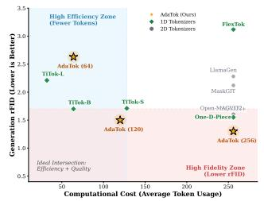
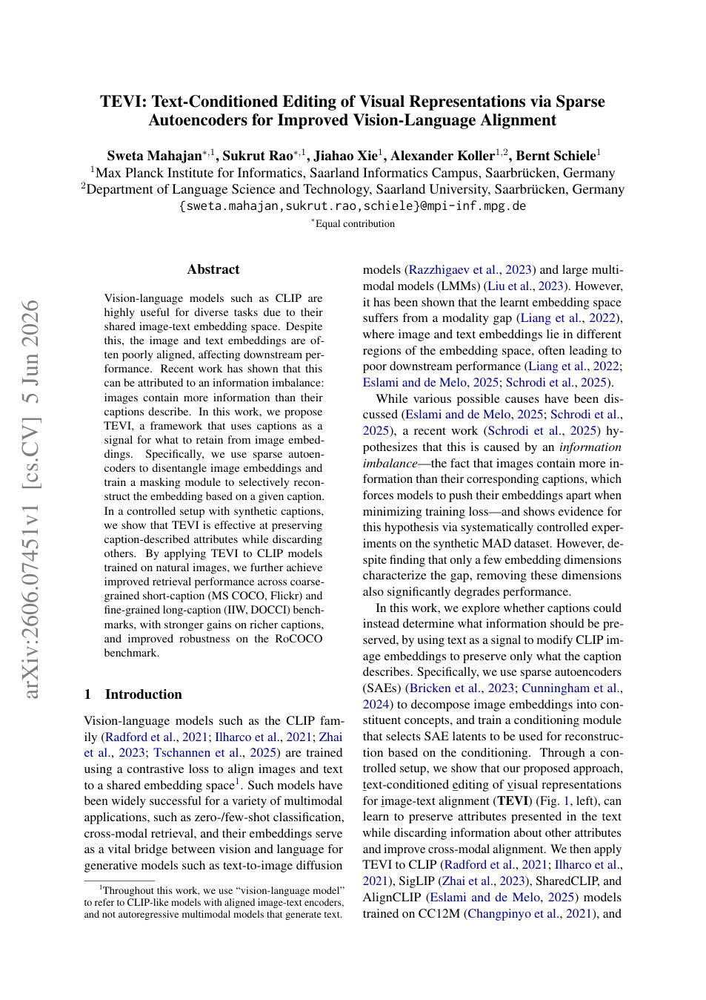
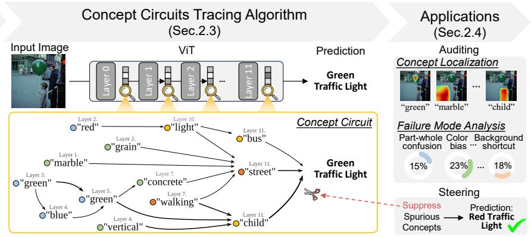
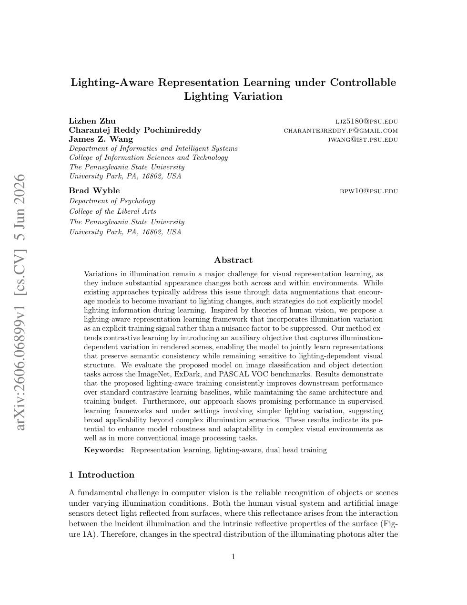
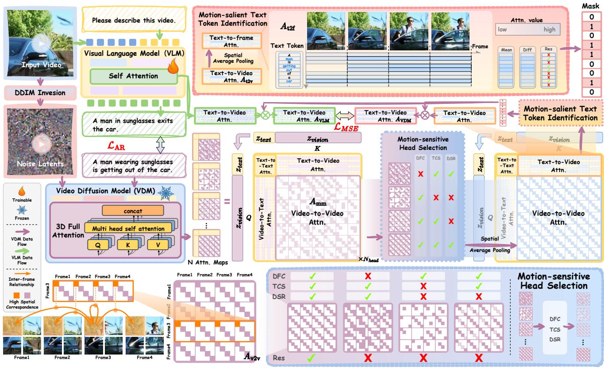
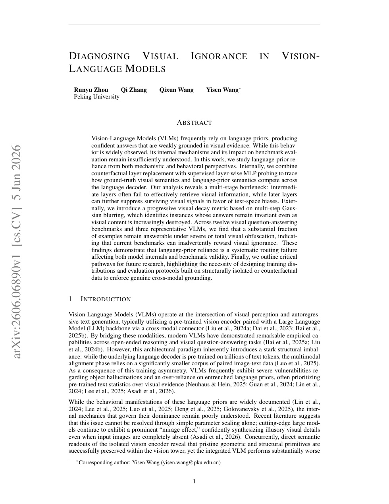
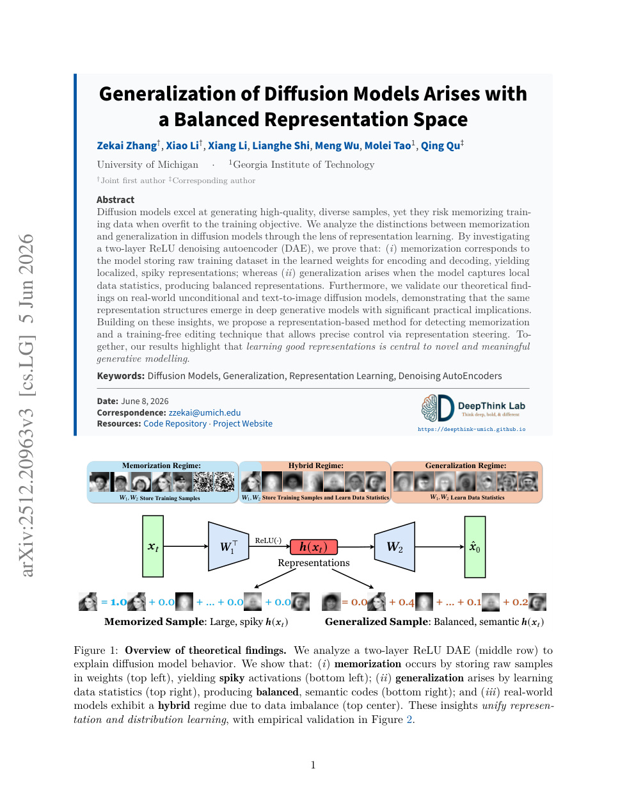
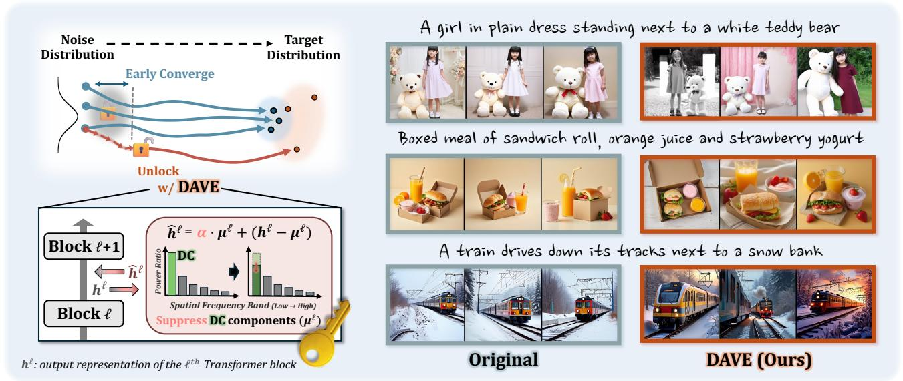
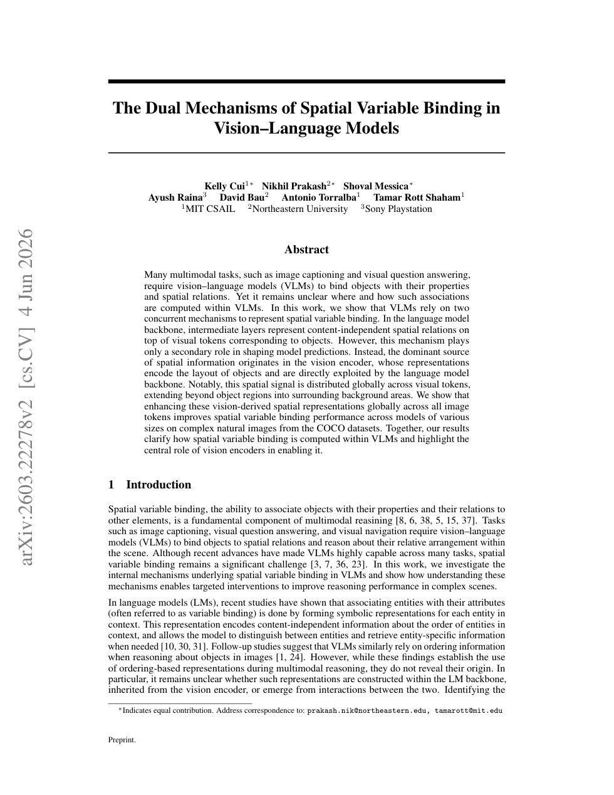
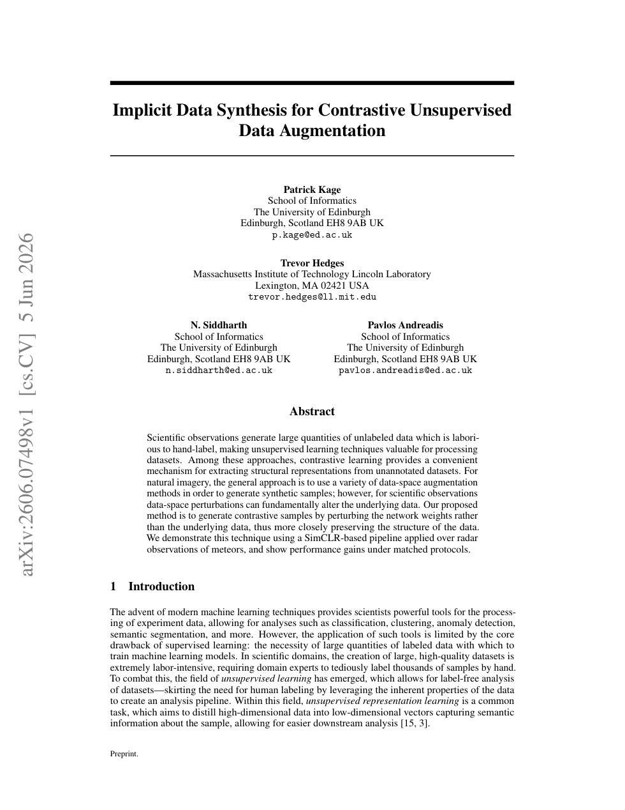

6 月 8 日：AdaTok 等视觉表征论文归档
本页按日期归档近期论文，保留优先级、主题、来源与方法线索，方便回看同一批工作的研究脉络。
先读 AdaTok。把离散 1D image tokenizer 的 token budget 学成内容条件输出，连接 visual tokenization、latent compression 和 AR image generation。 其余论文按 P1/P2 与主题顺序扫读，重点看方法图、消融设置和是否能迁移到通用视觉表征。
论文索引

AdaTok: Self-Budgeting Image Tokenization with Quality-Preserving Dynamic Tokens
高相关；详见方法、贡献和实验边界。
方法：把离散 1D image tokenizer 的 token budget 学成内容条件输出，连接 visual tokenization、latent compression 和 AR image generation

TEVI: Text-Conditioned Editing of Visual Representations via Sparse Autoencoders for Improved Vision-Language Alignment
高相关；详见方法、贡献和实验边界。
方法：用 caption-conditioned sparse autoencoder editing 精简 CLIP image embedding，直接服务图文表征对齐

Inside the Visual Mind: Neuroscience-Motivated Concept Circuits for Interpreting and Steering Vision Transformers
高相关；详见方法、贡献和实验边界。
方法：ViSAE 把 SAE 概念分解、自动解释和 causal circuit tracing 接到 ViT，是理解/steering 视觉表征的高价值工具

Lighting-Aware Representation Learning under Controllable Lighting Variation
高相关；详见方法、贡献和实验边界。
方法：把光照变化从“要被增强抹掉的 nuisance”改成显式训练信号，扩展 contrastive visual representation learning

MotionEnhancer: Leveraging Video Diffusion for Motion-Enhanced Vision-Language Models
中高相关；详见方法、贡献和实验边界。
方法：从 video diffusion model 蒸馏 motion attention prior 给 video VLM，适合跟踪视频表征和生成模型监督的交叉

Diagnosing Visual Ignorance in Vision-Language Models
中高相关；详见方法、贡献和实验边界。
方法：用层替换、MLP probing 和视觉衰减指标诊断 VLM 如何丢失视觉证据，是 V-L 自监督评估的强信号

Generalization of Diffusion Models Arises with a Balanced Representation Space
中高相关；详见方法、贡献和实验边界。
方法：从 representation geometry 解释 diffusion memorization/generalization，对 latent diffusion 与 RAE 线索有理论参考

Breaking the Lock-in: Diversifying Text-to-Image Generation via Representation Modulation
中相关；详见方法、贡献和实验边界。
方法：在 diffusion transformer 中对早期 DC feature 做 training-free modulation，说明生成多样性也可从表征频率成分入手

The Dual Mechanisms of Spatial Variable Binding in Vision-Language Models
中相关；详见方法、贡献和实验边界。
方法：指出 VLM spatial binding 的主信号来自 vision encoder 的全局 token 表征，适合作为 VLM 表征诊断读物

Implicit Data Synthesis for Contrastive Unsupervised Data Augmentation
中相关；详见方法、贡献和实验边界。
方法：用网络权重扰动替代数据扰动生成 contrastive samples，实验偏雷达科学数据，但思想可迁移